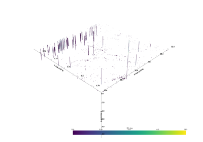

subsurface.StructuredData¶
-
class
subsurface.StructuredData(data: xarray.core.dataset.Dataset, data_array_name: str = 'data_array')[source]¶ Examples using StructuredData
Methods
__init__(data[, data_array_name])Initialize self.
from_data_array(data_array[, data_array_name])from_dict(data_dict[, coords])from_numpy(array[, coords, data_array_name, …])to_binary([order])Attributes
Primary structure definition for structured data
default_datasetvalues-
data_array_name: str = 'data_array'¶ Primary structure definition for structured data
- Check out other constructors: StructuredData.from_numpy,
StructuredData.from_data_array and StructuredData.from_dict
- Parameters
data (xr.Dataset) – object containing structured data, i.e. data that can be stored in multidimensional numpy array. The preferred type to pass as data is directly a xr.Dataset to be sure all the attributes are set and named as the user wants.
data_array_name (str) – If data is a numpy array or xarray DataArray, data_name provides the name for the xarray data variable
-
data¶ - Type
-